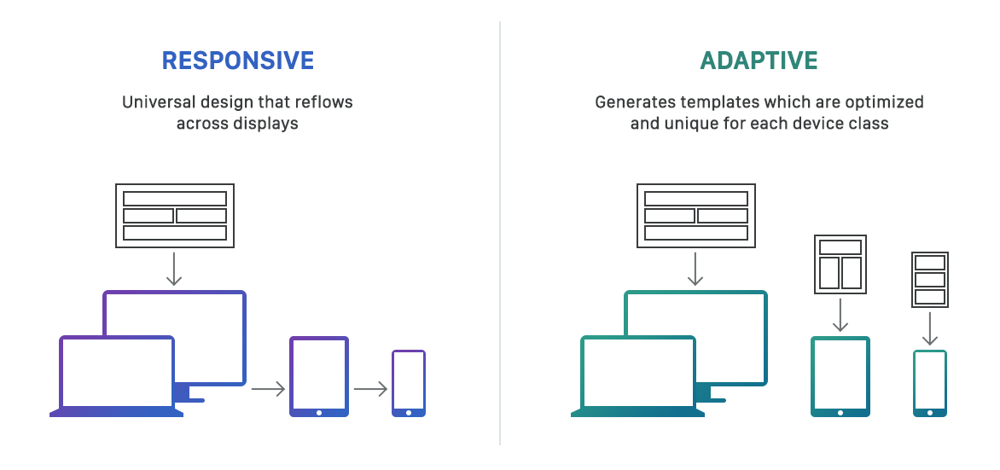
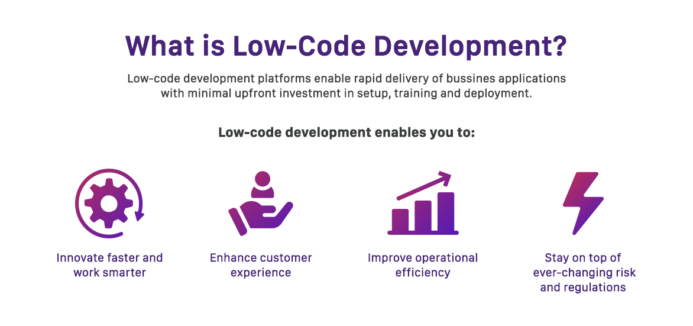

Virtual Reality - Quest
Virtual Reality has been a huge step in the gaming industry and technology, taking gamers in a 360 experience. VR sets are in continous development due to the high demand and the many upgrading posibilities. When we talk about gaming on PC’s, PlayStations or Xbox there is not much to add, not much expanding left with the platforms, only the game industries can try and develop better games. With the VR there is a completely different story because it hasn’t existed for long and industries are trying to create the best sets in order to enhance the experience. Virtual Reality is already great but they hope to achieve the greatest.
 Ambitious development of VR sets is the Oculus Quest. A lot of people still don’t know about VR so, for instance, whenever I have the chance, I let people use my Oculus Rift to experience the virtual reality. A lot of them enjoy it or love it and consider buying one themselves. The price is affordable for such a technology and they seem surprised to discover that. However, as soon as I tell them about the need of a gaming PC which is more expensive they give up the idea. The truth is that nowadays only gamers love to have a big, performant PC for gaming. Normal people who don’t have a passion for games use portable devices such as laptops. So Oculus came with a solution: The Oculus Quest.
The Oculus Quest is a standalone VR set which as performance and graphics quality is better than the Oculus Go but lower than Oculus Rift. The Quest is exactly what people mentioned above need, a VR set that doesn’t need anything else but itself. You don’t need any PC or platform, which makes it really convenient, especially knowing that its price is no different than Oculus Rift so it is still affordable. As for the realease date, they hope to realese it in spring 2019 at the same price of Oculus Rift.
Ambitious development of VR sets is the Oculus Quest. A lot of people still don’t know about VR so, for instance, whenever I have the chance, I let people use my Oculus Rift to experience the virtual reality. A lot of them enjoy it or love it and consider buying one themselves. The price is affordable for such a technology and they seem surprised to discover that. However, as soon as I tell them about the need of a gaming PC which is more expensive they give up the idea. The truth is that nowadays only gamers love to have a big, performant PC for gaming. Normal people who don’t have a passion for games use portable devices such as laptops. So Oculus came with a solution: The Oculus Quest.
The Oculus Quest is a standalone VR set which as performance and graphics quality is better than the Oculus Go but lower than Oculus Rift. The Quest is exactly what people mentioned above need, a VR set that doesn’t need anything else but itself. You don’t need any PC or platform, which makes it really convenient, especially knowing that its price is no different than Oculus Rift so it is still affordable. As for the realease date, they hope to realese it in spring 2019 at the same price of Oculus Rift.
Web development trends that will dominate in 2019
Today, web developments are providing solutions in nearly every facet of life. A Netcraft survey shows that there are over 200 million active websites, while the total number of websites (active and inactive) is nearly 10 times as much. What’s even more astonishing is the fact that over 200 new websites are being floated every minute. The following is a rundown of 10 trends in web development that will dominate in 2019:
Artificial Intelligence
Artificial intelligence is one of the core components of any excellent digital transformation strategy. And as more companies are vying to implement digital transformation strategies, the role of artificial intelligence will grow even more central in web developments than ever before.
Adaptability
In order to reach a wider audience, most brands are rooting for websites that can be displayed perfectly on a wide range of smart devices. The trend of adaptability owes more to the fact that more web users are accessing the web through multiple mobile devices. As companies look to capture a greater proportion of audiences in their niches by making their website more responsive to a wider range of devices, adaptability is bound to continue as a key trend in web development in the coming year.
Motion UI
Web users are increasingly becoming more inclined to simple, yet captivating and interactive graphics on web pages. Web development companies are coming to realize that the diminishing attention span of average internet users is calling for more captivating graphics on web pages. Static images and flash-based graphics are relegating many websites to web user’s back burners, while evocative motion UI is becoming all the rage these days. The growing preference among web users for intuitive motion UI will drive the popularity of motion UI through the roof in the coming years.
Low Code Development
By providing a faster and easier way to develop and deploy web developments, low code development facilitates the rapid development of excellent websites without the need for proficient coding expertise. Low code developments have been making serious waves as they’re increasingly being preferred by web development companies over the conventional development processes.
